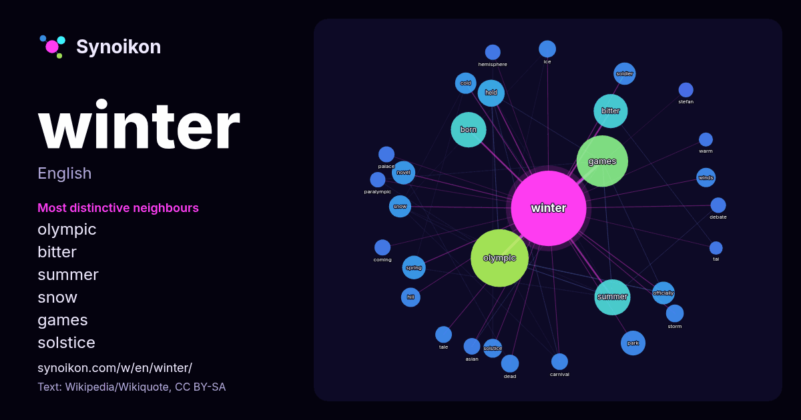

English · word of the day list
winter
The words found around it in 1589 instances from Wikipedia, Wikiquote, Hacker News.

Most distinctive neighbours
- olympic 76×
- bitter 57×
- summer 26×
- snow 22×
- games 20×
- solstice 19×
- cold 18×
- officially 17×
- spring 16×
- soldier 15×
- carnival 14×
- novel 14×
- winds 14×
- tale 13×
- hemisphere 12×
- storm 12×
- paralympic 11×
- stefan 11×
- dead 11×
- born 11×
× = how many times more often than in general Wikipedia text.
Most frequent neighbours
- olympic 170
- games 135
- summer 66
- born 64
- bitter 59
- american 48
- album 37
- held 37
- park 31
- novel 28
- spring 28
- film 27
- officially 26
- snow 25
- soldier 25
- cold 23
- song 22
- sports 22
- october 20
- hill 19
In context
- Winter is the coldest and darkest season of the year in temperate and polar climates. It occurs after autumn and before spring, when the hemisphere is Wikipedia snippets · Winter
- Winter & Winter is a record label in Munich, Germany that specializes in jazz, classical and improvised music. It was founded by Stefan Winter following Wikipedia snippets · Winter & Winter Records
- If Not, Winter: Fragments of Sappho is a book by the Canadian classicist and poet Anne Carson, first published in 2002. It contains a translation of the Wikipedia snippets · If Not, Winter
- Alexander Ross Winter (born 17 July 1965) is a British-American actor and filmmaker. As an actor, he is best known for playing Bill S. Preston, Esq., in Wikipedia snippets · Alex Winter
- Ariel Winter Workman (born January 28, 1998) is an American actress. She gained her career breakthrough and stardom in the 2010s for playing the intelligent Wikipedia snippets · Ariel Winter
- The Winds of Winter is the planned sixth and penultimate novel of the epic fantasy series A Song of Ice and Fire by American writer George R. R. Martin Wikipedia snippets · The Winds of Winter
- Cameron Winter (born March 4, 2002) is an American musician who serves as the frontman, lead vocalist and principal songwriter for the rock band Geese Wikipedia snippets · Cameron Winter
- Eric Barrett Winter (born July 17, 1976) is an American actor. He has appeared in the television roles as Sergeant Tim Bradford on the ABC show The Rookie Wikipedia snippets · Eric Winter
More words
- art
- autumn
- bell
- bread
- bridge
- cat
- city
- climate
- clock
- death
- desert
- dog
- family
- food
- forest
- garden
- god
- gold
- health
- heart
- history
- honey
- horse
- island
- language
- life
- map
- mirror
- money
- mother
- mountain
- nature
- power
- rain
- road
- salt
- science
- shadow
- silence
- song
- star
- storm
- summer
- tea
- time
- train
- truth
- water
- work
Precomputed on 2026-10-09 with default settings (±5 words, medium corpus). The interactive map can refresh it with live data.